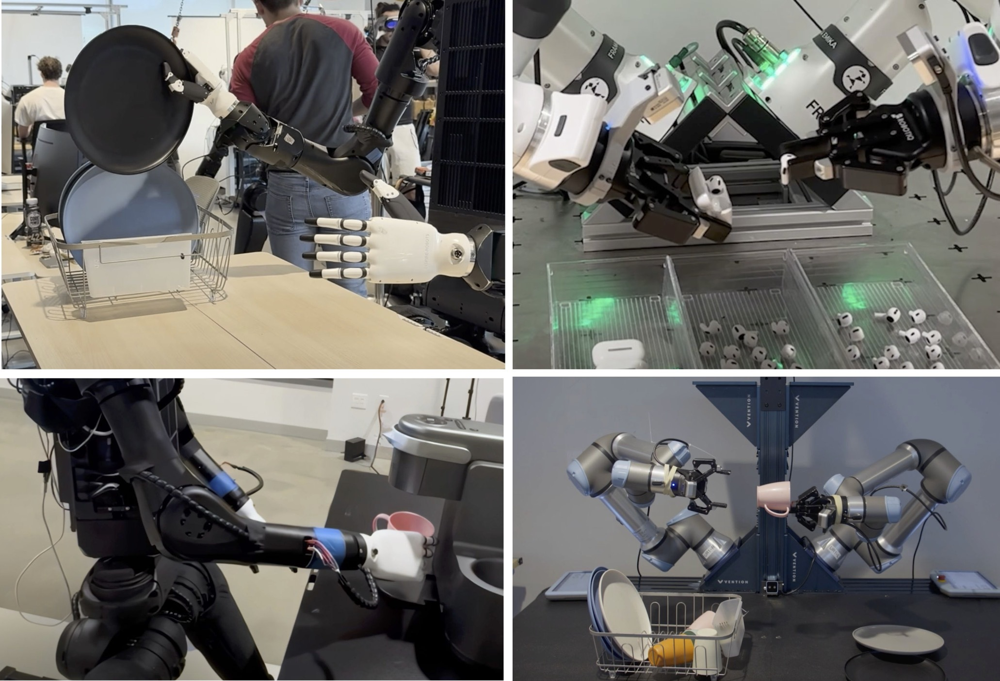
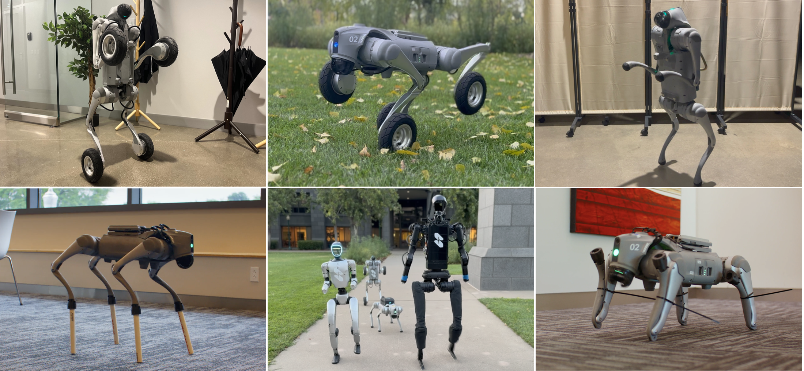
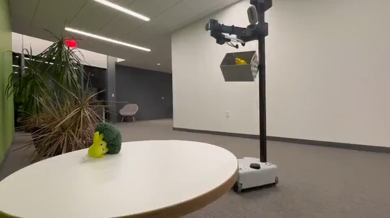
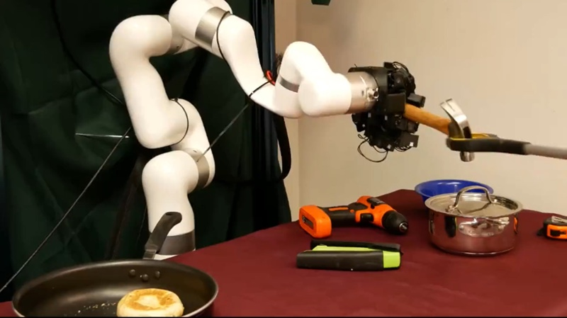

Building the general-purpose robotic brain
Skild AI’s approach to a shared foundation model for robot perception, navigation, and manipulation.
I’m building toward scientific superintelligence at Warp.
“The test of all knowledge is experiment.”
— Richard Feynman
Before Warp, I worked on general-purpose embodied intelligence at Skild AI. I did my MS in Robotics at Carnegie Mellon with Deepak Pathak, studying how active vision enables reactive behavior: robots learning where to look and using visual feedback to coordinate navigation and manipulation in real time.
My research journey started at IIIT Delhi, where I studied Computer Science and worked with Saket Anand and Pavan Turaga. Along the way, I also spent time at USC as a visiting researcher in Joseph Lim’s CLVR Lab.

Skild AI’s approach to a shared foundation model for robot perception, navigation, and manipulation.

Learning to adapt across different robot bodies, hardware failures, and unfamiliar physical conditions.

SPIN brings perception, interaction, and navigation into one coordinated robot system.

Learning to grasp everyday objects in ways that let a robot actually use them.
Robots, science, or a book I should read?
Say hello